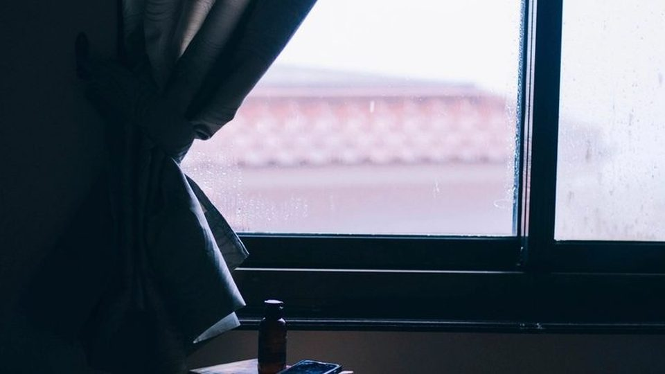

Why I chose a midwife
What I was actually offered at nine weeks pregnant, what I got, and what I would tell a friend who asked me the same question.
The blog
Five posts. They were written over several years and put up in the order a reader needs them: the loss, then the dream, then the two births, then how it was arranged.
What I was actually offered at nine weeks pregnant, what I got, and what I would tell a friend who asked me the same question.

Hezekiah arrived weighing nine pounds twelve ounces, and then the room changed very quickly.

Seventeen hours of labour, thirteen of them with no pain, and a watermelon eaten in the birthing pool.

A letter to God in the autumn of 2017, a pregnancy two days later, and a dream that asked me the question nobody had.
The summer there was no heartbeat, the three choices nobody should have to make, and the call ten days afterwards.
These were written at different times and put up in the order I would want a reader to meet them. If you are new here, begin with nine weeks and three days and read forward.